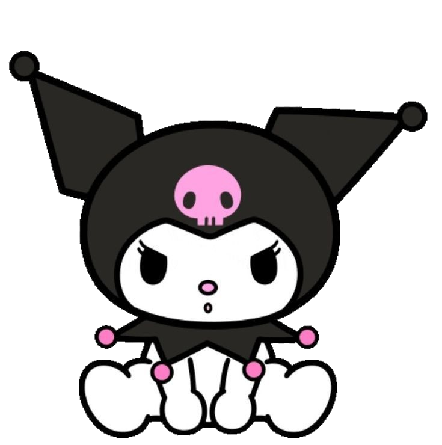
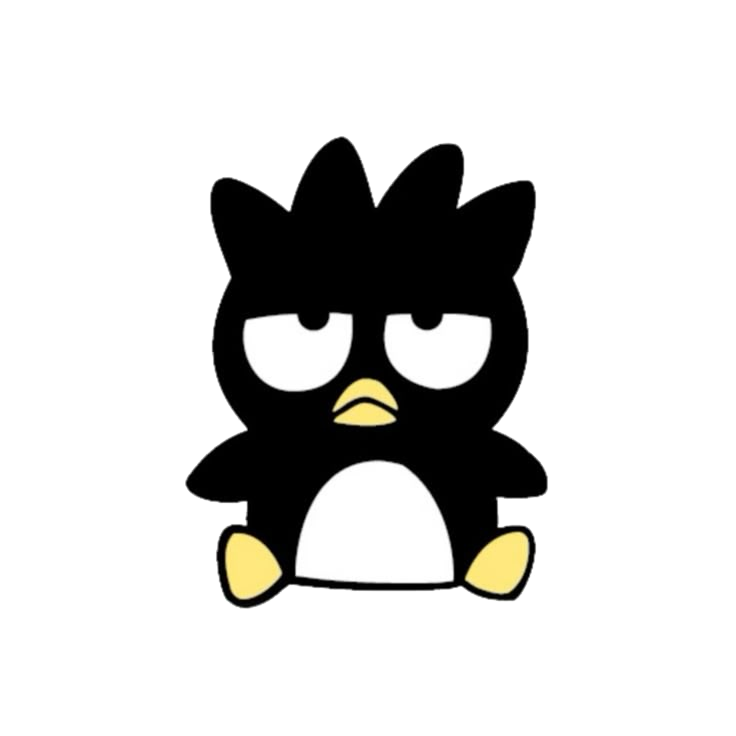
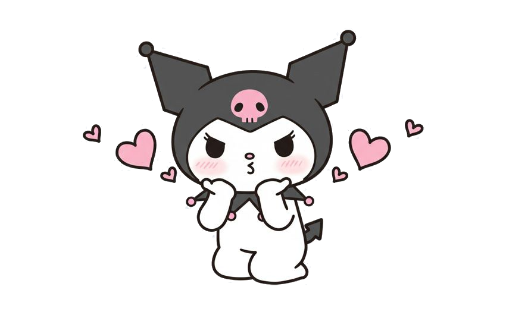
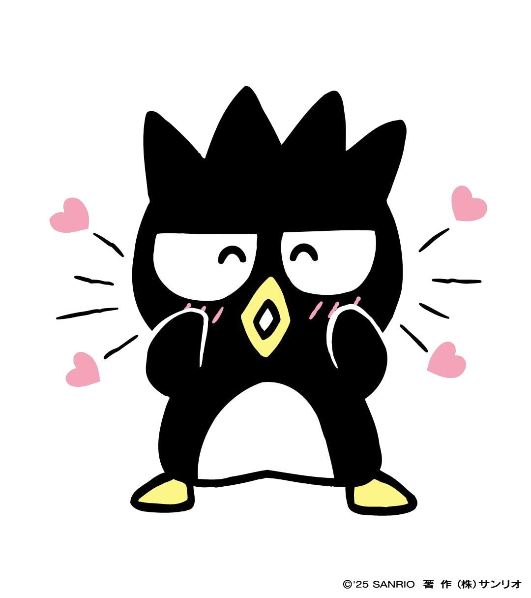
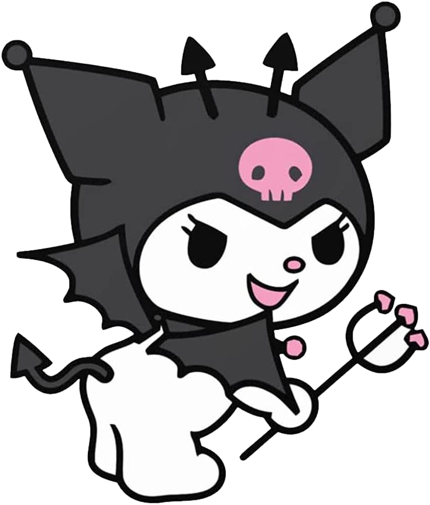
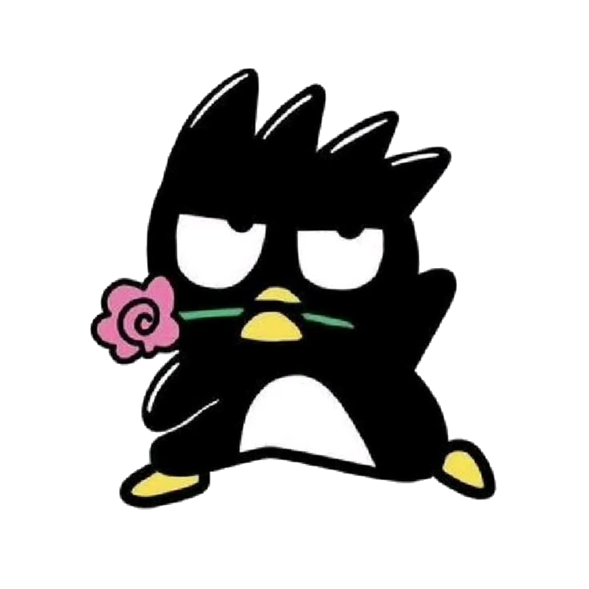
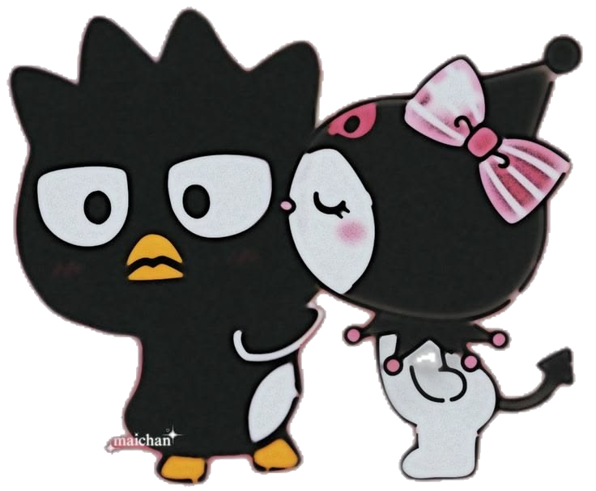

NOSOTROS
Quizás algunas cosas que vivimos parecen pequeñas cuando las miramos desde afuera. Pero para mí nunca fueron pequeñas. Porque fueron nuestras.
Todas esas noches hablando, sin darnos cuenta de la hora solamente porque ninguno quería irse.
Ese “te amo” que alguna vez fue solamente una frase y terminó significando muchísimo.
Un número que quizás para cualquiera no significa nada, pero para nosotros es muy especial.


SI PUDIERA VOLVER ATRÁS...
Si pudiera volver al momento en el que nuestras vidas todavía no se conocían... Si pudiera volver a ese instante en el que vos todavía eras una desconocida para mí... Y alguien me contara todo lo que iba a sentir por vos... probablemente no lo creería.
No sabría que iba a existir una persona capaz de quedarse tanto tiempo en mi cabeza. No sabría que iba a extrañar tanto una voz, una conversación, un mensaje. No sabría que iba a conocer a alguien que terminaría convirtiéndose en mi otra mitad, mi alma, mi persona...


LO QUE NUNCA SUPE DECIRTE ASÍ
Morena...
No sé exactamente en qué momento te convertiste en alguien tan importante para mí.
Quizás fue de a poquito.
En cada conversación.
En cada madrugada.
En cada risa.
En cada “te amo”.
En cada vez que esperaba tu mensaje y sonreía apenas veía aparecer tu nombre.
Quizás fue sin darme cuenta,
hasta que un día entendí que ya no eras simplemente una persona con la que hablaba.
eras vos.
La persona que buscaba cuando me pasaba algo.
La persona que quería contarle mis cosas.
La persona que extrañaba cuando no estaba.
La persona que aparecía en mi cabeza incluso
cuando estaba haciendo cualquier otra cosa.
Y ahí entendí que te habías convertido en mi persona.
Y creo que eso es lo que más me cuesta explicar.
Porque no importa cuánto intente ponerlo en palabras,
siento que nunca alcanza para decirte todo lo que sos para mí.
Hubo noches en las que me acosté y me quedé mirando el techo pensando en vos.
Pensando qué estarías haciendo, si estarías bien, si me extrañarías aunque fuera un poquito,
si en algún momento del día también aparecía yo en tu cabeza.
Y ahí me daba cuenta de algo...
Cómo puede alguien estar tan lejos y sentirse tan cerca al mismo tiempo?
Porque estabas en mis pensamientos,
en mis canciones,
en mis ganas de hablar,
en mis planes,
en mis noches y hasta en esas pequeñas cosas del día que
quizás ni siquiera sabías que me hacían acordar a vos.
Y sí, sé que muchas veces fui demasiado
Sé que fui denso.
Sé que fui pesado.
Sé que a veces quise estar demasiado encima tuyo,
hablarte todo el tiempo,
saber de vos todo el tiempo,
sentirte cerca todo el tiempo.
Y quiero pedirte perdón por eso
Es que cuando se trata de vos, siento todo demasiado fuerte.
No porque haya sido mentira lo que sentía,
sino porque quizás muchas veces no supe manejar todo.
el miedo, la inseguridad...
estoy aprendiendo y quiero seguir aprendiendo,
Aprendiendo que amarte también es escucharte.
También es confiar.
También es entender tus silencios.
No quiero que sientas presión,
y yo tampoco quiero seguir viviendo con miedo de perderte.
Quiero confiar en lo que somos, incluso cuando no estemos hablando o cuando necesites tu espacio
Quiero que me elijas.
Quiero que mires hacia mí y, aun teniendo la posibilidad de elegir cualquier camino, quieras volver a elegirme a mí.
Porque yo, si tuviera que volver al principio sabiendo que todo lo sé ahora...
Te volvería a elegir a vos, con todo.
Con lo lindo
Con lo dificil
Con nuestras risas
Con nuestras peleas
Con nuestras madrugadas
Con cada "te amo"
Con cada momento en el que nos extrañamos
Con todo lo que fuimos y con todo lo que
todavia podemos ser.
No borraría lo Nuestro
Ni siquiera las partes que dolieron.
Porque cada una de ellas forma parte de nosotros.
Y quizás eso sea lo que más extraño... a nosotros.
A esa sensación de saber que eras mi lugar.
De poder decir "mi amor" y saber que eras vos.
De sentir que, entre tanta gente, habia una persona que
era diferente a todas las demas, VOS.
Quizás hay algo que nunca supe decirlo bien,
para mí sos mi mujer.
lo digo porque asi te siento.
como esa persona que mi corazon eligió y que,
aunque pasen cosas, sigue teniendo un lugar
que nadie más puede ocupar.
Hay algo de vos que siento que es solamente mío
Tu forma de hablarme, tus "te amo",
Tus "amor", tus enojos,
Tus risas, tus pequeñas manías.
La manera en que me hacés senti cuando estamos bien.
Esas cosas que existen entre vos y yo.
y por eso me cuesta tanto imaginarte lejos de mí.
Porque no quiero que otra persona conozca esa versión tuya
que yo aprendí a amar...
No quiero compartir ese lugar que siento nuestro.
Pero también, entendí que amar no significa agarrarte fuerte
para que no te vayas.
Creo que significa quererte tanto que, incluso cuando
tengo miedo, aprendo a confiar.
y eso quiero aprender por vos.
Quiero volver a conocerte.
Incluso después de todo lo que ya sé de vos.
Quiero descubrir nuevas cosas tuyas, nuevas canciones
que te gusten, nuevas cosas que te hagan reír,
nuevas costumbrs, nuevas partes de vos que
todavía no conozco.
Y lo mismo para vos, que me conozcas, que conozcas partes mías que aun no conoces.
Estoy enamorado de vos y quiero seguir enamorandome de vos, pero
está vez conociendote todavía más.
Sin apurarte, tampoco exigirte.
Simplemte ser nosotros.
Te necesito a vos siendo vos.
Y eso es lo que más deseo de todo, que podamos miarnos
y sentir que nos volvimos a encontrar.
No para borrar lo que pasó, tampoco para fingir
que nunca nos lastimamos, sino para decir:
"Después de todo, acá seguimos, vos y yo, otra vez... Eligindonos."
Porque si me preguntás qué quiero para el futuro,
es... simplemente estar con vos, vivir muchas experiencias,
comer hamburgesas juntos, tomar, salir a caminar, formar una familia,
casarnos, tener una casita linda y viajar por todos lados.
porque cuando cierro los ojos y pienso en lo que realmente quiero...
inevitablemente aparecés vos. Y eso nunca cambió
Ni siquiera cuando intenté convencerme de que
tenía que dejar de sentir.
Porque despues de todo, seguis siendo vos.
La misma Morena que llegó a mi vida sin que yo
supiera cuánto iba significar en mi vida.
La misma que extraño cuando no está,
la misma que amo incluso cuando las cosas se ponen
dificiles, la misma que, de alguna manera sigue teniendo mi corazón.
Nunca dejé de pensarte, de amarte y mucho menos de elegirte.
nunca dejé de hacerlo, decidí no darme por vencido.
Quiero que sepas y te quedes con una cosa:
TE AMO CON EL ALMA MORENA, HASTA LA LUNA SOLO DE IDA, EN TODOS LOS UNIVERSOS
Y EN TODAS LAS VIDAS QUE TOQUE.
Y también quiero que sepas algo, amor.
NO quiero que algún otro chabón vaya a quererte de la misma manera en la que yo te quiero.
tampoco que si va a quedarse cuando las cosas
se pongan dificiles, si va a querer conocer cada parte tuya, incluso esas que
a veces ni vos entendés.
NO quiero que otro chabón esté para vos como yo quiero estar.
En tus días buenos, pero tambien en esos dias en los que no
tenés ganas de nada.
Cuando estás feliz, pero tambien cuando estés mal.
Cuando tengas ganas de hablar y cuando simplemente necesites que
alguien se quede ahí, sin preguntar mucho.
porque yo no quiero estar solamente cuando todo sea lindo.
Quiero ser ese que se quede cuando la vida se ponga dificil
Y quizás soy medio egoísta cuando digo todo esto, pero
tampoco quiero que otro chabón ocupe ese lugar que siento
tan nuestro. Porque después de todo lo que vivimos,
de todas nuestras noches, nuestras conversaciones, nuestras risas,
nuestras peleas, nuestros “te amo” y cada cosa que solamente existe entre vos y yo...
en el fondo de mi corazón siente que sos MI MORENA, mi persona, mi lugar,
mi otra mitad.
Y si, nadie va a amarte tanto como yo.
porq nadie puede ser yo, y tampoco quiero ser cualquiera para vos.
esta vez quiero hacerlo sabiendo que no solo yo te estoy eligiendo.
sino, que nos estemos eligiendo, los dos.
Gracias por ser vos, por aguantarme tanto, eternamente gracias.
y por tomarte tu tiempo en leer esta hermosa carta que dedique mi tiempo y cariño,
te amo mi amor.
Mi Morena 💙🌙

Y AHORA SÍ...
Después de todo lo que fuimos.
Después de todo lo que vivimos.
Después de todo lo que sentimos.
Hay algo que todavía necesito preguntarte.
y todo esto me hace acordar aquella noche cuando te mande esa carta, estaba nervioso, ansioso todo
ahora mismo me siento igual que aquella vez.
Querés volver a ser mi novia?
No quiero que sientas que tenés que responder por presión amor
Solamente quería que supieras lo que siento
y preguntarte si todavía querés que escribamos
juntos lo que sigue.
cuando selecciones uno d esos, hacemelo saber amor porfis... q nervios.